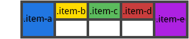
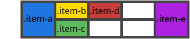

错误监控与上报
脚本错误分类
- 语法错误
- 运行时错误
- 资源加载错误
语法错误和运行时错误都属于代码错误，资源加载错误通常是找不到文件或文件加载超时造成的。
监控方式
try-catch
1 | try { |
通过给代码块进行 try-catch 包装，当代码块出错时 catch 将能捕获到错误信息，页面也将继续执行。
- 无法捕捉到语法错误，只能捕捉运行时错误；
- 可以拿到出错的信息，堆栈，出错的文件、行号、列号；
- 需要借助工具把所有的function块以及文件块加入try,catch，可以在这个阶段打入更多的静态信息。（异步报错可以通过为异步函数块再包装一层try-catch，增加标识信息来配合定位，可以用工具来进行处理）。
window.onerror
1 | window.onerror = function (msg, url, row, col, error) { |
- 可以捕捉语法错误，也可以捕捉运行时错误；
- 可以拿到出错的信息，堆栈，出错的文件、行号、列号；
- 只要在当前页面执行的js脚本出错都会捕捉到，例如：浏览器插件的javascript、或者flash抛出的异常等。
- 跨域的资源需要特殊头部支持(在script标签加一个crossorign属性，或者在响应头加：Acess-Control-Allow-Orign字段)。
增加 crossorigin 属性后，浏览器将自动在请求头中添加一个 Origin 字段，发起一个 跨来源资源共享 请求。Origin 向服务端表明了请求来源，服务端将根据来源判断是否正常响应。
onerror 主要用来捕获预料之外的错误，而 try-catch 则可以用在预知情况下监控特定错误，两种形式结合使用更加高效。
Obj.onerror
1 | var img = document.getElementById('#img'); |
利用window的Error事件代理，但是Error事件不会冒泡，可以利用addEventListener捕获进行代理：1
2
3window.addEventListener('error',function(){
// 捕获错误
},true)
上报方式
监控错误拿到了报错信息，接下来则是将捕抓的错误信息发送到信息收集平台上，发送的形式主要有两种。
通过Ajax发送数据
ajax上报就是在上文注释错误捕获的地方发起ajax请求，来向服务器发送错误信息。
动态创建img标签
1 | function report(msg, level) { |
图片懒加载
方式
- 延时加载：使用setTimeout或setInterval进行加载延迟，如果用户在加载前就离开了，自然不会进行加载
- 条件加载：符合某些条件或者触发了某些条件才开始异步加载
- 可视区域加载：仅仅加载用户可以看到的区域，这个主要监控滚动条来实现，一般距离用户看到的底边很近的时候开始加载，这样能保证用户下拉时图片正好介接上，不会有太长时间的停顿。
原理
页面加载后只让文档可视区内的图片显示，其它不显示，随着用户对页面的滚动，判断其区域位置，生成img标签，让到可视区的图片加载出来。
给img的父级加属性 (例如data-src），将图片的地址赋值给他，这样就生成img标签后再把data-src的值赋给img的src（通过dataset.src或者getAttribute(‘src’),再赋值给img.setAttribute(‘src’)）。
在图片出现之前，图片区域显示loading，图片加载完成去掉loading。
1 | var oUl = document.getElementsByTagName('ul')[0]; |
移动端适配问题
基本概念
分辨率：
1334pt x 750pt 指的是屏幕上垂直有1136个物理像素，水平有750个物理像素。
屏幕尺寸：
4.7in 注意英寸是长度单位，不是面积单位。4.7英寸指的是屏幕对角线的长度，1英寸等于2.54cm。
屏幕像素密度：
326ppi 指的是每英寸屏幕所拥有的像素数，在显示器中，dpi=ppi。dpi强调的是每英寸多少点。同时，屏幕像素密度=分辨率/屏幕尺寸
设备独立像素：
设备独立像素，不同于设备像素（物理像素），它是虚拟化的。比如说css像素，我们常说的10px其实指的就是它。需要注意的是，物理像素开发者是无法获取的，它是自然存在的一种东西，该是多少就是多少。
设备像素比：
缩写简称dpr，也就是我们经常在谷歌控制台移动端调试顶端会看到的一个值。设备像素比 = 设备像素 / css像素（垂直方向或水平方向）。
可以通过JS来获取：window.devicePixelRatio
布局视口
写过css的小伙伴应该知道，我们在html、body设置width:100%;height:100%;的时候，它并不是无效的。我们都知道100%这种百分数应该是继承父元素而来的。那在这里是继承哪里的呢？
在PC浏览器中，有一个用来约束CSS布局视口的东西，又叫做初始包含块。这也就是所有宽高继承的由来。除去margin、padding，布局视口和浏览器可视窗口宽度是一致的，同时也和浏览器本身的宽度一致。
但是在移动端，就大不一样了。
在移动端，默认的情况下，布局视口的宽度是要远远大于浏览器的宽度的。这两个视口不同于PC端，是相互独立存在的。为什么呢？试想一下，如果一个网页不对移动端进行适配，用户进行阅读的时候，如果默认情况下布局视口的宽度等于浏览器宽度，那是不是展示起来更加的不友好。也就是说，如果一个div的宽度为20%，那么它在布局视口宽度为980px的时候，展示给用户的像素还有196px，而如果宽度只有375px的情况下，宽度只有75px，展示的大小相差特别大。
所以，浏览器厂商为了让用户在小屏幕下网页也能够显示地很好，所以把布局视口宽度设置地很大，一般在768px ~ 1024px之间，最常见的宽度是980px。这个宽度可以通过document.documentElement.clientWidth得到。
视觉视口
对于视觉视口来说，这个东西是呈现给用户的，它是用户看到网页区域内CSS像素的数量。由于用户可以自行进行缩放控制，所以这个视口并不是开发者需要重点关注的。
值得注意的是，在移动端缩放不会改变布局视口的宽度，当缩小的时候，屏幕覆盖的css像素变多，视觉视口变大，反之亦然。
而在PC端，缩放对应布局宽度和视觉窗口宽度都是联动的。而浏览器宽度本身是固定的，无论怎么缩放都不受影响。
对于PC端来说：

对于移动端来说：

理想视口
以上，布局视口很明显对用户十分的不友好，完全忽略了手机本来的尺寸。
所以苹果引入了理想视口的概念，它是对设备来说最理想的布局视口尺寸。理想视口中的网页用户最理想的宽度，用户进入页面的时候不需要缩放。
那么很明显，所谓的理想宽度就是浏览器（屏幕）的宽度了。
所以就有了下面的这段代码：1
<meta name="viewport" content="width=device-width">
然而，这段代码其实也并不完美，在IE浏览器中，由于横屏竖屏的切换会对其造成影响，为了解决这个兼容性的问题，最后再加上一句，就有了现在的：1
<meta name="viewport" content="width=device-width,initial-scale=1">
viewport
viewport – 在html中添加meta标签: 网页的宽度默认等于屏幕的宽度
1 | <meta name="viewport" content="width=device-width, initial-scale=1,user-scalable=0"> |
扩展viewport属性：
- width 设置viewport的宽度，可以是数字，或者使用字符串“device-width”；
- initial-scale 页面初始的缩放，首次 load 的时候缩放比例是1，使用它的时候，同时也会将布局视口的尺寸设置为缩放后的尺寸。而缩放的尺寸就是基于屏幕的宽度来的，也就起到了和width=device-width同样的效果。
- minimum-scale/maximum-scale 允许用户缩放的最小/最大比例
- height 设置viewport的高度，很少设置这个属性
- user-scalable 用户是否可以手动缩放 ，一般两个值 yes/no
模糊的由来
dpr的具体表现
有时候我们会发现，当我们在适某一机型的时候，显示上没什么问题。但是一旦我换到另外一部手机，发现出现了模糊的情况，尤其以图片更为显著。
其实这个问题，就是涉及到了上面讲到的一个属性：设备像素比，即我们经常说的dpr。下面先来看dpr的表现：
假设现在有一台iphone6，那么它的设备独立像素是375x667，dpr为2，尺寸是4.7in，那么物理像素就是750x1334。 同样的我们也有一台不知名的设备，它的设备独立像素刚好也是375x667，尺寸也是4.7in，但是dpr为1，此时的物理像素就是375x667。
于是，它们的屏幕表现如下：

在不同的屏幕上，无论是普通屏幕还是retina屏幕，css像素所呈现的大小是一致的。（如果不理解这句话，可以写一个2px的正方形使用谷歌控制台移动设备调试，在不同的设备之间来回切换，你会发现大小其实是一样的。一开始我总以为这个css像素的实际宽高因为受到dpr的影响而在不同设备上的长宽是不一致的。）
不同的是，1个css像素对应（覆盖）的物理像素个数。
所以，如果我们想要在这两个屏幕显示这么一个css样式：1
2width: 2px;
heigth: 2px;
在普通屏幕下，也就是dpr为1的屏幕中，1个css像素对应（覆盖）的是一个物理像素。在retina屏幕下，1个css像素对应（覆盖）的是4个物理像素。换句话说，就是dpr为2的设备。看下面这张图：

浅显的理解就是可以看作是2cmx2cm的正方形被切割成四块，然后遇到dpr为2的时候，被切割的四块又被分别切割成四块，但是总面积不变。
模糊的产生
知道了1个css像素覆盖的物理像素可能不同，就好理解为什么会出现模糊的情况了。
位图像素
位图像素是栅格图像（如：png,jpg,gif等）最小的数据单元。每一个位图像素都包含着一些自身的显示信息。（如：显示位置，颜色值，透明度等）
理论上来说，1个位图像素对应1个物理像素，图片才能等到完美清晰的展示。
但是上面说过，在retina屏幕上，会出现1个位图像素对应多个物理像素。
还是以iphone6为例，1个位图像素对应4个物理像素。由于单个位图像素已经是最小的数据单位了，它不能再被进行切割。于是为了能够显示出来，就只能就近取色，从而导致所谓的图片模糊问题。如下：

解决方法
很明显，由于位图像素不够分而产生模糊的情况，解决的办法十分简单，就是使用跟dpr同个倍数大小的图片。比如iphone6，一个200x300的img标签，原图就要提供400x600的大小。
那么当加载到img标签中，浏览器会自动对每1px的css像素减半，可以理解为此时还是维持着1:1的css像素:物理像素，不产生模糊。
这个做法其实就是手淘团队在做retina适配的一个重要的原理之一。
1px边框问题
因为不同设备的dpr不同，1px的css像素覆盖的物理像素个数就不同，所以会产生2px或者3px的问题。
解决方法：
伪类+transform实现
原理：是把原先元素的 border 去掉，然后利用 :before 或者 :after 重做 border ，并 transform 的 scale 缩小一半，原先的元素相对定位，新做的 border 绝对定位。
1 | .scale{ |
flexible.js
这是淘宝移动端采取的方案,前面已经说过1px变粗的原因就在于一刀切的设置viewport宽度,如果能把viewport宽度设置为实际的设备物理宽度, css里的1px不就等于实际1px长了么. flexible.js就是这样干的.
使用box-shadow模拟边框
利用css 对阴影处理的方式实现0.5px的效果
1 | .box-shadow-1px { |
图片高清问题
通过css媒体查询库或者javascript条件判断，在不同的dpr下加载不同尺寸的图片。
无论从管理上，还是从性能上看，只要有可能，尽量部署独立的图片服务器。
屏幕适配页面问题
响应式针对的是不同分辨率设备而进行的适配式设计，以利用@media规则为主要手段，而自适应则忽略@media以比例布局为主，目的是适应不同的浏览器窗口大小。
响应式布局
流式布局+媒体查询
用来解决不同宽度的布局问题，父级宽度不够的时候，子级节点会“挤下去” — 使用css3，根据屏幕分辨率进行不同的样式应用
优劣：
- 这种布局通吃pc和移动端，做到精细处，两者的效果都很好，
- 缺点是媒体查询是有限的，也就是可以枚举出来的
- 对设计要求简单、清晰、复杂的设计稿会直接弄死前端，同时需要多个设计稿
- css3低版本浏览器不支持
伸缩布局
使用的是Flexbox ，有兼容性问题。
整体思路：考虑把一个元素变成一个伸缩容器 –>伸缩容器中子元素的排列方式 –>子元素所占空间
rem布局
相对单位rem基准值公式：rem=document.documentElement.clientWidth*dpr/10(10是为了取整)
赋值给html的font-size:rem
demo:iPhone4/5 320*2/10=64px
如需改变根节点的html的font-size的rem属性，可以通过媒体查询/javascript操作
字体大小问题
html上，加入了一个自定义属性，data-dpr
1 | <html data-dpr='dpr'></html> |
处理dpr的值来适配不同屏幕字体
1 | if (!dpr && !scale) { |
Grid网格布局
基本概念
flexbox是一维布局，他只能在一条直线上放置你的内容区块；而grid是一个二维布局。可以根据你的设计需求，将内容区块放置到任何你想要放的地方。网络布局可以将应用程序分割成不同的空间，或者定义他们的大小、位置以及层级。
使用Grid布局非常简单，你只需要给容器（container）定义：display:grid，并设置列（grid-template-columns）和 行（grid-template-rows）的大小，然后用grid-column和grid-row定义容器子元素（grid-item项目）的位置。
网格容器（Grid Container）
元素应用display:grid，它是其所有网格项的父元素。下面例子container就是网格容器。
1 | <div class="container"> |
网格项（Grid Item）
网格容器的子元素，下面的item元素是网格项，但sub-item不是。1
2
3
4
5
6
7<div class="container">
<div class="item"></div>
<div class="item">
<p class="sub-item"></p>
</div>
<div class="item"></div>
</div>
网格线（Grid Line）
组成网格线的分界线。它们可以是列网格线（column grid lines），也可以是行网格线（row grid lines）并且居于行或列的任意一侧，下面黄色线就是列网格线。

网格轨道（Grid Track）
两个相邻的网格线之间为网格轨道。你可以认为它们是网格的列或行，下面在第二个和第三个网格线之间的黄色部分为网格轨道。
网格单元（Grid Cell）
两个相邻的列网格线和两个相邻的行网格线组成的是网格单元，它是最小的网格单元。下面行网格线1（row grid lines 1）、行网格线2（row grid lines 2）和列网格线2（column grid lines 2）、列网格线3（column grid lines 3）组成的黄色区域为网格单元。

网格区（Grid Area）
网格区是由任意数量网格单元组成，下面行网格线1（row grid lines 1）、行网格线3（row grid lines 3）和列网格线1（column grid lines 1）、列网格线3（column grid lines3）组成的黄色区域为网格区。

网格容器属性
display
1 | display: grid | inline-grid | subgrid; |
属性值：
- grid: 生成块级网格
- inline-grid: 生成行内网格
- subgrid: 如果网格容器本身是网格项（嵌套网格容器），此属性用来继承其父网格容器的列、行大小。
注：当元素设置了网格布局，column、float、clear、vertical-align属性无效。
grid-template-columns/rows
设置行和列的大小，在行轨道或列轨道两边是网格线。1
2grid-template-columns: <track-size> ... | <line-name> <track-size> ... ;
grid-template-rows: <track-size> ... | <line-name> <track-size> ... ;
属性值：
- track-size: 轨道大小，可以使用css长度，百分比或用分数（用fr单位）。
- line-name: 网格线名字，你可以选择任何名字。
例子：
当你设置行或列大小为auto时，网格会自动分配空间和网格线名称。1
2
3
4
5.container{
display:grid;
grid-template-columns: 40px 50px auto 50px 40px;
grid-template-rows: 25% 100px auto;
}

你也可以给网格线定义名字，注意名字需要写在[]里面。1
2
3
4
5.container{
display:grid;
grid-template-columns: [first] 40px [line2] 50px [line3] auto [col4-start] 50px [five] 40px [end];
grid-template-rows: [row1-start] 25% [row1-end] 100px [third-line] auto [last-line];
}

每条网格线可以有多个名字，例如上面行的第二条线有两个名字，分别是row1-end和row2-start。1
2
3
4.container{
display:grid;
grid-template-rows: [row1-start] 25% [row1-end row2-start] 25% [row2-end];
}
如果你定义包含重复部分，可以使用repeat()简化。1
2
3
4
5.container{
display:grid;
grid-template-columns: repeat(3, 20px [col-start]) 5%;
// 相当于grid-template-columns: 20px [col-start] 20px [col-start] 20px [col-start] 5%;
}
用fr单位可以将容器分为几等份，例如下面分成三等份。1
2
3
4.container{
display:grid;
grid-template-columns: 1fr 1fr 1fr;
}
如果fr单位和实际值一起使用，设置fr的行或列将分(除了实际值)剩余部分。
1 | .container{ |
grid-template-areas
通过获取网格项中的grid-area属性值（名称），来定义网格模版。重复网格区（grid-area）名称将跨越网格单元格，‘.’代表空网格单元。
属性值：
- grid-area-name: 网格项的grid-area属性值（名字）
- ‘.’ : 空网格单元
- none: 不定义网格区域
1 | .item-a{ |
上面代码示例会创建四列三行网格，第一行将是header，第二行前两个网格单元是main部分、第三个为空网格单元、第四个为sliderbar，第三行是footer。

grid-column-gap
网格单元间距。1
grid-column-gap：<line-size>; 和 grid-row-gap: <line-size> ;
属性值：
- line-size: 网格线间距,设置单位值。
1 | .container{ |

注：间隔仅仅作用在网格单元之间，不作用在容器边缘。
grid-gap
是grid-column-gap 和 grid-row-gap简写。1
grid-gap：<grid-column-gap> <grid-row-gap>;
1 | .container{ |
注：如果只设置一个值，那么grid-column-gap 和 grid-row-gap都为那个值。
justify-items
垂直于列网格线对齐，适用于网格容器里的所有网格项。1
justify-items: start | end | center | stretch（默认） ;
属性值：
- start: 左对齐。
- end: 右对齐。
- center: 居中对齐。
- stretch: 填满（默认）。
1 | .container{ |

1 | .container{ |

1 | .container{ |

align-items
垂直于行网格线对齐，适用于网格容器里的所有网格项。1
align-items: start | end | center | stretch ;
属性值：
- start： 顶部对齐。
- end： 底部对齐。
- center： 居中对齐。
- stretch：填满（默认）。
1 | .container{ |

justify-content
如果用像px非弹性单位定义的话，总网格区域大小有可能小于网格容器，这时候你可以设置网格的对齐方式（水平对齐）1
justify-content: start | end | center | stretch | space-around | space-between | space-evenly ;
属性值：
- start: 左对齐。
- end: 右对齐。
- center: 居中对齐。
- stretch: 填满网格容器。
- space-around: 网格项两边间距相等，网格项之间间隔是单侧的2倍。
- space-between: 两边对齐，网格项之间间隔相等。
- space-evenly: 网格项间隔相等。
1 | .container{ |

align-content
如果用像px非弹性单位定义的话，总网格区域大小有可能小于网格容器，这时候你可以设置网格的对齐方式（垂直方向对齐）。1
align-content: start | end | center | stretch | space-around | space-between | space-evenly ;
属性值：
- start: 顶部对齐。
- end: 底部对齐。
- center: 居中对齐。
- stretch: 填满网格容器。
- space-around: - 网格项两边间距相等，网格项之间间隔是单侧的2倍。
- space-between: 两边对齐，网格项之间间隔相等。
- space-evenly: 网格项间隔相等。
1 | .container{ |

grid-auto-columns/rows
自动生成隐式网格轨道（列和行），当你定位网格项超出网格容器范围时，将自动创建隐式网格轨道。
1 | grid-auto-columns: <track-size> ... ; 和 grid-auto-rows: <track-size> ... ; |
属性值：
- track-size: 网格轨道大小,可以是固定值，百分比或者是分数（fr单位）。
1 | .container{ |

这是2✖️2的网格，但是我们来用grid-column 和 grid-row给网格项定位如下：1
2
3
4
5
6
7
8.item-a{
grid-column: 1 / 2;
grid-row: 2 / 3;
}
.item-b{
grid-column: 5 / 6;
grid-row: 2 / 3;
}

我们可以看出，网格项item-b定位在第五根列网格线（column line 5 ）和第六根列网格线（column line 6 ）之间。但是我们网格容器根本不存在这两条网格线，所以就用两个0宽度来填充。在这里我们可以用网格自动行（grid-auto-rows）和网格自动列（grid-auto-columns）来定义这些隐式轨道宽度。
1 | .container{ |

grid-auto-flow
在没有设置网格项的位置时，这个属性控制网格项怎样排列。
1 | grid-auto-flow : row（默认） | column | dense ; |
属性值：
- row: 按照行依次从左到右排列。
- column: 按照列依次从上倒下排列。
- dense: 按先后顺序排列。
来看看下面结构：1
2
3
4
5
6
7<section class="container">
<div class="item-a">item-a</div>
<div class="item-b">item-b</div>
<div class="item-c">item-c</div>
<div class="item-d">item-d</div>
<div class="item-e">item-e</div>
</section>
1 | .container{ |
由于我们设置了grid-auto-flow：row，item-b、item-c和item-d在行上是从左到右排列，如下：

如果我们设置 grid-auto-flow: column;结果如下：

grid
是一种简写形式，设置网格容器所有属性。1
grid: none | <grid-template-rows> / <grid-template-columns> | <grid-auto-flow> [<grid-auto-rows> [ / <grid-auto-columns>] ];
属性值：
- none: 设置为所有属性的默认值。
/ : 设置行和列的值，其他属性为默认值。 [ [ / ] ] : 设置网格自动流、网格自动行、网格自动列的值，其他未设置则为默认值。
1 | .container{ |
网格项属性
grid-column-start/end
通过网格线来定义网格项的位置。grid-column-start、grid-row-start定义网格项的开始位置，grid-column-end、grid-row-end定义网格项的结束位置。
1 | grid-column-start: <number> | <name> | span <number> | span <name> | auto ; |
属性值：
- line: 指定带编号或者名字的网格线。
- span
: 跨越轨道的数量。 - span
: 跨越轨道直到对应名字的网格线。 - auto: 自动展示位置，默认跨度为1。
1 | .item-a{ |

注：如果未声明grid-column-end或grid-row-end，默认将跨越一个轨道。项目也可以重叠，设置z-index来确定堆叠顺序。
grid-column/rows
是 grid-column-start、grid-column-end 和 grid-row-start、grid-row-end 的简写。1
2grid-column: <start-line> / <end-line> | <start-line> / span <value> ;
grid-row: <start-line> / <end-line> | <start-line> / span <value> ;
1 | .item-c{ |

grid-area
定义网格项名字，以便创建模块（容器属性grid-template-areas来定义模块）。1
grid-area: <name> | <row-start> / <column-start> / <row-end> / <column-end> ;
属性值：
- name: 项目名子。
/ / / : 可以是数字或网格线名字。
justify-self
定义单个网格项垂直于列网格线的对齐方式。1
justify-self: justify-self: start | end | center | stretch;
属性值：
- start: 网格区域左对齐。
- end: 网格区域右对齐。
- center: 网格区域居中。
- stretch: 网格区域填满。
1 | .item-a{ |

提示：也可以在容器上设置justify-items，达到全部网格项对齐。
align-self
定义单个网格项垂直于行网格线的对齐方式。1
align-self: start | end | center | stretch;
属性值：
- start: 网格区域顶部对齐。
- end: 网格区域底部对齐。
- center: 网格区域居中。
- stretch: 网格区域填满
1 | .item-a{ |

提示：也可以在容器上设置align-items，达到全部网格项对齐。
前端安全问题
XSS
跨站脚本（英语：Cross-site scripting，通常简称为：XSS）是一种网站应用程序的安全漏洞攻击，是代码注入的一种。它允许恶意用户将代码注入到网页上，其他用户在观看网页时就会受到影响。这类攻击通常包含了HTML以及用户端脚本语言。
XSS更偏向于代码实现（即写一段拥有跨站请求功能的JavaScript脚本注入到一条帖子里，然后有用户访问了这个帖子，这就算是中了XSS攻击了）
当应用程序收到含有不可信的数据，在没有进行适当的验证和转义的情况下，就将它发送给一个网页浏览器，这就会产生跨站脚本攻击。XSS允许攻击者在受害者的浏览器上执行脚本，从而劫持用户会话、危害网站、或者将用户转向恶意网站。
防御措施：
- 对输入内容做格式检查，过滤特殊字符串，客户端和服务端必须都要有。
- 输出检查，在输出之前进行转意。
- 保护Cookie, 使用HttpOnly字段防止被JS获取（因为攻击通常会采集敏感信息）；
- 使用HTTPs代替HTTP，（运营商经常会通过注入广告）
- 禁用JS，（这个不太现实）
- 设置 X-XSS-Protection 头
CSRF
跨站请求伪造（英语：Cross-site request forgery），也被称为 one-click attack 或者 session riding，通常缩写为 CSRF 或者 XSRF， 是一种挟制用户在当前已登录的Web应用程序上执行非本意的操作的攻击方法。
一个跨站请求伪造攻击迫使登录用户的浏览器将伪造的http请求，包含用户的会话cookie和其他认证信息，发送到一个存在漏洞的web应用程序。这就允许攻击者迫使用户浏览器向存在漏洞的应用程序发送请求，而这些请求会被应用程序认为是用户的合法请求。
跟跨网站脚本（XSS）相比，XSS 利用的是用户对指定网站的信任，CSRF 利用的是网站对用户网页浏览器的信任。
防御措施：
- 检查referer, X-Requested-With, Orign头，是否来自合法的源
- 使用POST代替GET
- 添加校验Token至表单中
- 添加验证码或其他人机验证手段
SQL注入
- SQL注入不仅能通过输入框，还能通过Url达到目的。
- 除了服务器错误页面，还有其他办法获取到数据库信息。
- 可通过软件模拟注入行为，这种方式盗取信息的速度要比你想象中快的多。
- 漏洞跟语言平台无关，并非asp才有注入漏洞而asp.net就没有注入漏洞，一切要看设计者是否用心。
关于安全性
- 对用户输入的内容要时刻保持警惕。
- 只有客户端的验证等于没有验证。
- 永远不要把服务器错误信息暴露给用户。
数据结构知识点
数组和链表的区别
数组是将元素在内存中连续存放。链表中的元素在内存中不是顺序存储的，而是通过存在元素中的指针联系到一起。
数组必须事先定义固定的长度，不能适应数据动态的增减的情况。当数据增加时，可能超出原先定义的元素个数；当数据减少时，造成内存浪费；链表动态地进行存储分配，可以适应数据动态地增减的情况。
- （静态）数组从栈中分配空间，对于程序员方便快速，但是自由度小；链表从堆中分配空间，自由度大但是申请管理比较麻烦。
数组和链表在存储数据方面到底谁好？根据数组和链表的特性，分两种情况讨论：
- 当进行数据查询时，数组可以直接通过下标迅速访问数组中的元素。而链表则需要从第一个元素开始一直找到需要的元素位置，显然，数组的查询效率会比链表的高。
- 当进行增加或删除元素时，在数组中增加一个元素，需要移动大量元素，在内存中空出一个元素的空间，然后将要增加的元素放在其中。同样，如果想删除一个元素，需要移动大量去填掉被移动的元素，而链表只需改动元素中的指针即可实现增加或删除元素。
哈希表，是既能具备数组的快速查询的优点，又能融合链表方便快捷的增加删除元素的优势。
所谓的hash,简单的说就是散列，即将输入的数据通过hash函数得到一个key值，输入的数据存储到数组中下标的key值的数组单元中去。
B树/B+树/B-树
B树
B树即二叉搜索树：
- 所有非叶子结点至多拥有两个儿子（Left和Right）；
- 所有结点存储一个关键字；
- 非叶子结点的左指针指向小于其关键字的子树，右指针指向大于其关键字的子树；

B树搜索过程：
- B树的搜索，从根结点开始，如果查询的关键字与结点的关键字相等，那么就命中；
- 否则，如果查询关键字比结点关键字小，就进入左儿子；如果比结点关键字大，就进入右儿子；如果左儿子或右儿子的指针为空，则报告找不到相应的关键字；
如果B树的所有非叶子结点的左右子树的结点数目均保持差不多（平衡），那么B树的搜索性能逼近二分查找；但它比连续内存空间的二分查找的优点是，改变B树结构（插入与删除结点）不需要移动大段的内存数据，甚至通常是常数开销；
实际使用的B树都是在原B树的基础上加上平衡算法，即“平衡二叉树”；如何保持B树结点分布均匀的平衡算法是平衡二叉树的关键；平衡算法是一种在B树中插入和删除结点的策略；
B-树
B-树是一种多路搜索树（并不是二叉的）：
- 定义任意非叶子结点最多只有M个儿子；且M>2；
- 根结点的儿子数为[2, M]；
- 除根结点以外的非叶子结点的儿子数为[M/2, M]；
- 每个结点存放至少M/2-1（取上整）和至多M-1个关键字；（至少2个关键字）
- 非叶子结点的关键字个数=指向儿子的指针个数-1；
- 非叶子结点的关键字：K[1], K[2], …, K[M-1]；且K[i] < K[i+1]；
- 非叶子结点的指针：P[1], P[2], P[M]；其中P[1]指向关键字小于K[1]的子树，P[M]指向关键字大于K[M-1]的子树，其它P[i]指向关键字属于(K[i-1], K[i])的子树；
所有叶子结点位于同一层；
如：（M=3）

B-树搜索过程
- 从根结点开始，对结点内的关键字（有序）序列进行二分查找，如果命中则结束，否则进入查询关键字所属范围的儿子结点；重复，直到所对应的儿子指针为空，或已经是叶子结点；
B-树的特性：
- 关键字集合分布在整颗树中；
- 任何一个关键字出现且只出现在一个结点中；
- 搜索有可能在非叶子结点结束；
- 其搜索性能等价于在关键字全集内做一次二分查找；
- 自动层次控制；
由于限制了除根结点以外的非叶子结点，至少含有M/2个儿子，确保了结点的至少利用率。
所以B-树的性能总是等价于二分查找（与M值无关），也就没有B树平衡的问题；由于M/2的限制，在插入结点时，如果结点已满，需要将结点分裂为两个各占M/2的结点；删除结点时，需将两个不足M/2的兄弟结点合并；
B+树
B+树是B-树的变体，也是一种多路搜索树：其定义基本与B-树同，除了：
- 非叶子结点的子树指针与关键字个数相同；
- 非叶子结点的子树指针P[i]，指向关键字值属于[K[i], K[i+1])的子树（B-树是开区间）；
- 为所有叶子结点增加一个链指针；
所有关键字都在叶子结点出现；
如：（M=3）

B+的搜索与B-树也基本相同，区别是B+树只有达到叶子结点才命中（B-树可以在非叶子结点命中），其性能也等价于在关键字全集做一次二分查找；
B+的特性：
- 所有关键字都出现在叶子结点的链表中（稠密索引），且链表中的关键字恰好是有序的；
- 不可能在非叶子结点命中；
- 非叶子结点相当于是叶子结点的索引（稀疏索引），叶子结点相当于是存储（关键字）数据的数据层；
- 更适合文件索引系统；
B*树
是B+树的变体，在B+树的非根和非叶子结点再增加指向兄弟的指针；

B树定义了非叶子结点关键字个数至少为(2/3)M，即块的最低使用率为2/3（代替B+树的1/2）；
B+树的分裂： 当一个结点满时，分配一个新的结点，并将原结点中1/2的数据
复制到新结点，最后在父结点中增加新结点的指针；B+树的分裂只影响原结点和父结点，而不会影响兄弟结点，所以它不需要指向兄弟的指针；
B*树的分裂： 当一个结点满时，如果它的下一个兄弟结点未满，那么将一部分数据移到兄弟结点中，再在原结点插入关键字，最后修改父结点中兄弟结点的关键字（因为兄弟结点的关键字范围改变了）；如果兄弟也满了，则在原结点与兄弟结点之间增加新结点，并各复制1/3的数据到新结点，最后在父结点增加新结点的指针；
所以，B*树分配新结点的概率比B+树要低，空间使用率更高；
总结
- B树：二叉树，每个结点只存储一个关键字，等于则命中，小于走左结点，大于走右结点；
- B-树：多路搜索树，每个结点存储M/2到M个关键字，非叶子结点存储指向关键字范围的子结点；所有关键字在整颗树中出现，且只出现一次，非叶子结点可以命中；
- B+树：在B-树基础上，为叶子结点增加链表指针，所有关键字都在叶子结点中出现，非叶子结点作为叶子结点的索引；B+树总是到叶子结点才命中；
- B*树：在B+树基础上，为非叶子结点也增加链表指针，将结点的最低利用率从1/2提高到2/3；
数组去重方法
ES6的Set
Set数据结构，它类似于数组，其成员的值都是唯一的。
1 | let arr = [1,2,3,3]; |
也可以利用Array.from将Set结构转换成数组
利用对象属性去重
每次取出原数组的元素，然后再对象中访问这个属性，如果存在就说明重复
1 | function unique(arr){ |
indexOf
每次取出原数组的元素，然后通过indexOf来判断该元素在不在新数组里，不在就push到新数组里，最后返回新数组
1 | function unique(arr){ |
IE8不支持indexOFf
先排序再去重
经过sort后，相同的元素一定排到了一起，然后对排序后的数组遍历，比较当前元素和下一个元素是否相等，如果相等，用splice(i,1)方法对数组进行删除，删除元素之后，需要将数组的长度减1，避免少一次。
1 | function unique(arr){ |
sort()和splice()都是在原数组上进行操作，sort()返回排序后的数组，splice()返回删除的元素
双重循环
遍历传入的数组，元素与右边的元素依次比较，若元素有重复，则结束当前的元素比较，将下一个元素当做比较对象，即跳出内层循环。
1 | function unique(arr){ |
数组操作方法
- shift() 删除原数组的第一项，返回删除元素的值，如果数组为空则返回undefined
- unshift() 将参数添加到原数组开头，并返回数组的长度
- pop() 删除原数组最后一项，返回删除元素的值，如果数组为空返回undefined
- push() 将参数添加到原数组末尾，并返回数组长度
- sort() 对数组的元素进行排序，返回排序后的数组
- reverse() 将数组反序，返回排序后的数组
- splice(start,count,val1,val2..) 从start位置开始删除count个项，并从该位置插入新值，返回删除元素组成的数组
- slice(start,end) 返回原数组中指定开始下标到结束下标之间的项组成的新数组，不包括end
- concat() 用于合并两个或多个数组，返回新数组
- join(separator) 把数组中的元素通过指定分隔符转换为一个字符串，返回一个字符串
- indexOf() 返回指定元素在数组中的索引值，从前向后搜索
- lastIndeOf() 返回指定元素在数组中的索引值，从后向前搜索
- forEach() 对数组中的每一项运行给定函数，没有返回值
- map() 对数组中的每一项运行给定函数，返回每次函数调用的结果组成的数组
- filter() 对数组中的每一项运行给定函数，返回满足过滤条件组成的数组
- every() 判断数组中的每一项都是否满足条件，只有所有项都满足条件，才会返回true
- some() 判断数组中是否满足存在满足条件的项，只要有一个满足，就会返回true
- reduce() 迭代数组的所有项，然后构建一个最终返回的值
- reduceRight() 从数组最后一项开始，向前遍历到第一项
forEach() 退不出循环
HTML5新特性
文档声明方式
1 | <!DOCTYPE html> |
语义化标签
- header、footer、aside、nav、section、article
- mark、time、progress、command、details、dialog、summary
- figure、figcaption、meter、ruby、rt、rp、wbr
移除一些HTML4.01中的元素：
- center、font、frame、big、strike
- tt、applet、dir、basefont、acronym
Input类型
HTML5 拥有多个新的表单输入类型。这些新特性提供了更好的输入控制和验证。
- datetime、date、time、email、url、search、tel
- month、number、color、range、week
Video和Audio
video 元素提供了播放、暂停和音量控件来控制视频。1
2
3
4
5<video width="320" height="240" controls>
<source src="movie.mp4" type="video/mp4">
<source src="movie.ogg" type="video/ogg">
您的浏览器不支持Video标签。
</video>
video 和 audio元素的方法、属性和事件可以使用JavaScript进行控制.
- play()
- pause()
localStorage 和 sessionStorage
HTML5 web 存储,一个比cookie更好的本地存储方式。
WebSocket
WebSocket是HTML5开始提供的一种在单个 TCP 连接上进行全双工通讯的协议。
Web Workers
web worker 是运行在后台的 JavaScript，独立于其他脚本，不会影响页面的性能。您可以继续做任何愿意做的事情：点击、选取内容等等，而此时 web worker 在后台运行。
Web SQL
Web SQL 数据库 API 并不是 HTML5 规范的一部分，但是它是一个独立的规范，引入了一组使用 SQL 操作客户端数据库的 APIs。
应用程序缓存
使用 HTML5，通过创建 cache manifest 文件，可以轻松地创建 web 应用的离线版本。1
2
3
4
5
6
7
8
<html manifest="demo.appcache">
<body>
文档内容......
</body>
</html>
Canvas
HTML5的 canvas 元素用于图形的绘制，通过脚本 (通常是JavaScript)来完成。canvas 标签只是图形容器，必须使用脚本来绘制图形。可以使用 canvas 绘制路径,盒、圆、字符以及添加图像。
一个画布在网页中是一个矩形框，通过 canvas 元素来绘制.
注意: 默认情况下 canvas 元素没有边框和内容。
标签通常需要指定一个id属性 (脚本中经常引用), width 和 height 属性定义的画布的大小。可以使用 style 属性来添加边框:
1 | <canvas id="myCanvas" width="200" height="100" |
JS绘制过程：
- 获取Canvas元素对象；
- 调用Canvas对象的getContext()方法，创建一个context对象；
- 调用context对象进行绘图。
getContext(“2d”) 对象是内建的 HTML5 对象，拥有多种绘制路径、矩形、圆形、字符以及添加图像的方法。
1 | // 绘制矩形 |
- fillStyle 填充图形颜色（默认是黑色）
- fillRect(x,y,width,height) 方法定义了矩形当前的填充方式。
- moveTo(x,y) 定义线条开始坐标
- lineTo(x,y) 定义线条的结束坐标
- stroke() 绘制起始坐标和结束坐标之间的线条
- arc(x,y,r,start,stop) 绘制圆形
1 | // 绘制线条 |
- font 定义字体
- fillText(text,x,y) 在canvas上绘制实心的文本
- strokeText(text,x,y) 在canvas上绘制空心的文本
1 | var c=document.getElementById("myCanvas"); |
- createLinearGradient(x,y,x1,y1) 创建线条渐变
- createRadialGradient(x,y,r,x1,y1,r1) 创建一个径向/圆渐变
- addColorStop() 指定颜色停止
1 | var c=document.getElementById("myCanvas"); |
- drawImage(image,x,y) 把一副图像放在画布上
1 | var c=document.getElementById("myCanvas"); |
SVG
SVG 指可伸缩矢量图形 (Scalable Vector Graphics)，SVG 用于定义用于网络的基于矢量的图形，使用 XML 格式定义图形，图像在放大或改变尺寸的情况下其图形质量不会有损失。
SVG优势
与其他图像格式相比（比如 JPEG 和 GIF），使用 SVG 的优势在于：
- SVG 图像可通过文本编辑器来创建和修改
- SVG 图像可被搜索、索引、脚本化或压缩
- SVG 是可伸缩的
- SVG 图像可在任何的分辨率下被高质量地打印
- SVG 可在图像质量不下降的情况下被放大
SVG 与 Canvas两者间的区别
- SVG 是一种使用 XML 描述 2D 图形的语言。Canvas 通过 JavaScript 来绘制 2D 图形。
- SVG 基于 XML，这意味着 SVG DOM 中的每个元素都是可用的。您可以为某个元素附加 JavaScript 事件处理器。
- 在 SVG 中，每个被绘制的图形均被视为对象。如果 SVG 对象的属性发生变化，那么浏览器能够自动重现图形。
- Canvas 是逐像素进行渲染的。在 canvas 中，一旦图形被绘制完成，它就不会继续得到浏览器的关注。如果其位置发生变化，那么整个场景也需要重新绘制，包括任何或许已被图形覆盖的对象。
MathML
HTML5 可以在文档中使用 MathML 元素，对应的标签是1
<math>...</math> 。
MathML 是数学标记语言，是一种基于XML（标准通用标记语言的子集）的标准，用来在互联网上书写数学符号和公式的置标语言。
拖放(Drag/Drop)
首先，为了使元素可拖动，把 draggable 属性设置为 true ：
1
<img draggable="true">
ondragstart 元素拖动时触发事件
- dataTransfer.setData() 方法设置被拖数据的数据类型和值
- ondragover 事件规定在何处放置被拖动的数据。
- ondrop 当放置被拖数据时触发事件
- dataTransfer.getData() 方法获得被拖的数据
1
2
3<div id="div1" ondrop="drop(event)" ondragover="allowDrop(event)"></div>
<br>
<img id="drag1" src="/images/logo.png" draggable="true" ondragstart="drag(event)" width="336" height="69">
1 | function allowDrop(ev) |
Geolocation
HTML5 Geolocation（地理定位）用于定位用户的位置。
鉴于该特性可能侵犯用户的隐私，除非用户同意，否则用户位置信息是不可用的
- getCurrentPosition() 方法来获得用户的位置。
- watchPosition() 返回用户的当前位置，并继续返回用户移动时的更新位置（就像汽车上的 GPS）
- clearWatch() 停止 watchPosition() 方法
HTTP缓存机制
可以认为浏览器存在一个缓存数据库，用于储存一些不经常变化的静态文件（图片、css、js等）。我们将缓存分为强制缓存和协商缓存。
两类缓存机制可以同时存在，强制缓存的优先级高于协商缓存，当执行强制缓存时，如若缓存命中，则直接使用缓存数据库数据，不在进行缓存协商。
强制缓存
当缓存数据库中已有所请求的数据时。客户端直接从缓存数据库中获取数据。当缓存数据库中没有所请求的数据时，客户端的才会从服务端获取数据。
浏览器和服务器进行交互的时候会发送一些请求数据和响应数据，我们称之为HTTP报文。报文中包含首部header和主体部分body。与缓存相关的规则信息就包含在header中。boby中的内容是HTTP请求真正要传输的部分。
对于强制缓存，服务器响应的header中会用两个字段来表明——Expires和Cache-Control。
Expires
Exprires的值为服务端返回的数据到期时间。当再次请求时的请求时间小于返回的此时间，则直接使用缓存数据。但由于服务端时间和客户端时间可能有误差，这也将导致缓存命中的误差，另一方面，Expires是HTTP1.0的产物，故现在大多数使用Cache-Control替代。
Cache-Control
Cache-Control有很多属性，不同的属性代表的意义也不同。
- private：客户端可以缓存
- public：客户端和代理服务器都可以缓存
- max-age=t：缓存内容将在t秒后失效
- no-cache：需要使用协商缓存来验证缓存数据
- no-store：所有内容都不会缓存。
协商缓存
又称对比缓存，协商缓存需要进行对比判断是否可以使用缓存。浏览器第一次请求数据时，服务器会将缓存标识与数据一起响应给客户端，客户端将它们备份至缓存中。再次请求时，客户端会将缓存中的标识发送给服务器，服务器根据此标识判断。若未失效，返回304状态码，浏览器拿到此状态码就可以直接使用缓存数据了。对于协商缓存来说，缓存标识我们需要着重理解一下，下面我们将着重介绍它的两种缓存方案。
Last-Modified
服务器在响应请求时，会告诉浏览器资源的最后修改时间。
if-Modified-Since:
浏览器再次请求服务器的时候，请求头会包含此字段，后面跟着在缓存中获得的最后修改时间。服务端收到此请求头发现有if-Modified-Since，则与被请求资源的最后修改时间进行对比，如果一致则返回304和响应报文头，浏览器只需要从缓存中获取信息即可。
从字面上看，就是说：从某个时间节点算起，是否文件被修改了
- 如果真的被修改：那么开始传输响应一个整体，服务器返回：200 OK
- 如果没有被修改：那么只需传输响应header，服务器返回：304 Not Modified
if-Unmodified-Since:
从字面上看, 就是说: 从某个时间点算起, 是否文件没有被修改
- 如果没有被修改:则开始`继续’传送文件: 服务器返回: 200 OK
- 如果文件被修改:则不传输,服务器返回: 412 Precondition failed (预处理错误)
这两个的区别是一个是修改了才下载一个是没修改才下载。Last-Modified 说好却也不是特别好，因为如果在服务器上，一个资源被修改了，但其实际内容根本没发生改变，会因为Last-Modified时间匹配不上而返回了整个实体给客户端（即使客户端缓存里有个一模一样的资源）。为了解决这个问题，HTTP1.1推出了Etag。
Etag
Etag
服务器响应请求时，通过此字段告诉浏览器当前资源在服务器生成的唯一标识（生成规则由服务器决定）
If-None-Match：
再次请求服务器时，浏览器的请求报文头部会包含此字段，后面的值为在缓存中获取的标识。服务器接收到次报文后发现If-None-Match则与被请求资源的唯一标识进行对比。
- 不同，说明资源被改动过，则响应整个资源内容，返回状态码200。
- 相同，说明资源无新修改，则响应header，浏览器直接从缓存中获取数据信息。返回状态码304.
但是实际应用中由于Etag的计算是使用算法来得出的，而算法会占用服务端计算的资源，所有服务端的资源都是宝贵的，所以就很少使用Etag了。
缓存图解


缓存的优点
- 减少了冗余的数据传递，节省宽带流量
- 减少了服务器的负担，大大提高了网站性能
- 加快了客户端加载网页的速度
这也正是HTTP缓存属于客户端缓存的原因。
不同刷新的请求执行过程
- 浏览器地址栏中写入URL，回车浏览器发现缓存中有这个文件了，不用继续请求了，直接去缓存拿。（最快）
- F5 就是告诉浏览器，别偷懒，好歹去服务器看看这个文件是否有过期了。于是浏览器就胆胆襟襟的发送一个请求带上If-Modify-since。
- Ctrl+F5告诉浏览器，你先把你缓存中的这个文件给我删了，然后再去服务器请求个完整的资源文件下来。于是客户端就完成了强行更新的操作.